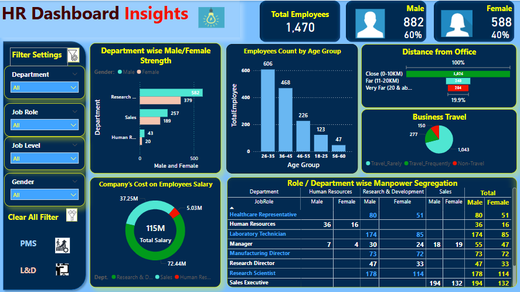
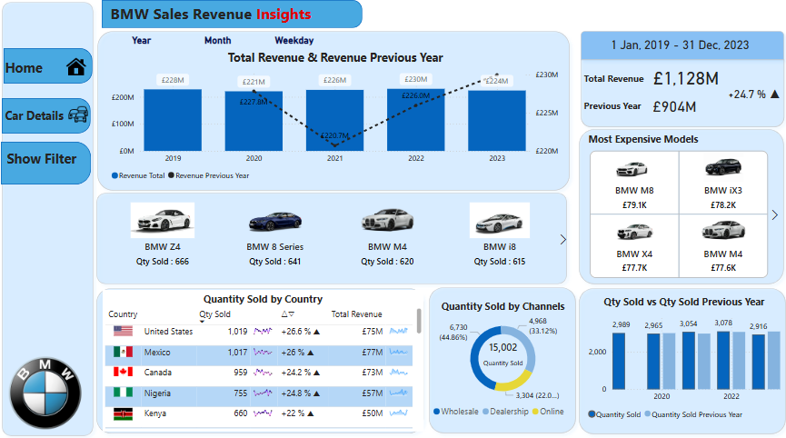

I am a Data enthusiast, over 12 years of experience in HR, pivoting into data analytics to transform data insights into actionable business strategies.
Now, I leverage SQL , Power BI and Microsoft Excel to decode HR, procurement and sales datasets - HR budgeting, cost management, expense analysis
, employee performance analysis, employee satisfaction analysis
and build dashboards that turn complex data into clear, strategic recommendations.
My strength lies in bridging HR operational expertise with data storytelling,
ensuring insights align with both employee needs and organizational goals. I’m eager to apply this hybrid skillset as a data analyst,
where I can drive decisions to enhance business productivity and ROI.

HR Analytics Project provides data-driven insights on important
HR KPIs e.g. departmental costs, workforce details, age demographics by job level, roles, and educational backgrounds.
It also includes HR budgeting , cost management and employee expense analysis dashboard. The prformance dashboard provides
an overview of low performers and those in the retrenchment category. Training dashboard tracks employee training participation rates. I have used Power Query for data transformation and cleaning, created DAX measures and developed an analytical star schema model
in Power BI to build this dashboard.

Sales Analytics Power BI dashboard tracks sales performance with an YoY analysis, identifies product demand by
analysing customer preferences and helps with inventory forecasting and planning using historicals sales analysis for channel partners.
I have used Power Query for data transformation and cleaning, created DAX measures and developed an analytical star schema model
in Power BI to build this dashboard.
Donec eget ex magna. Interdum et malesuada fames ac ante ipsum primis in faucibus. Pellentesque venenatis dolor imperdiet dolor mattis sagittis magna etiam.
Donec eget ex magna. Interdum et malesuada fames ac ante ipsum primis in faucibus. Pellentesque venenatis dolor imperdiet dolor mattis sagittis magna etiam.